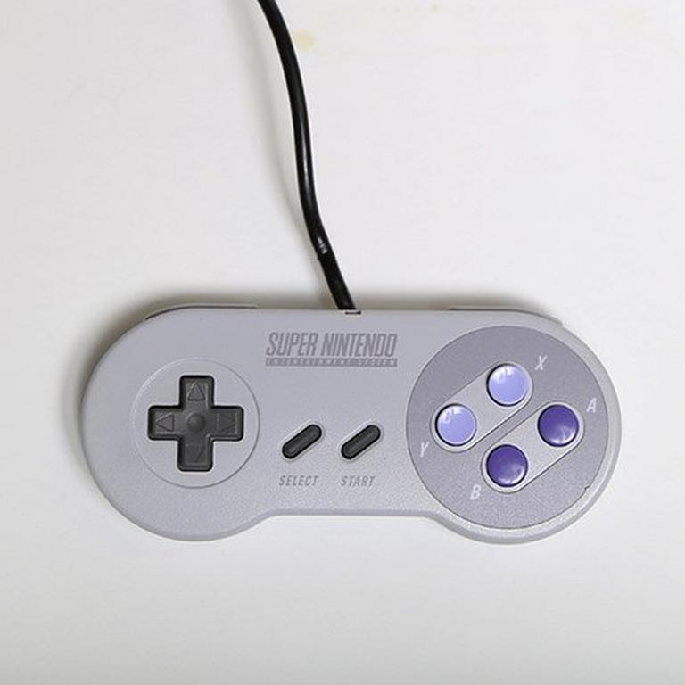
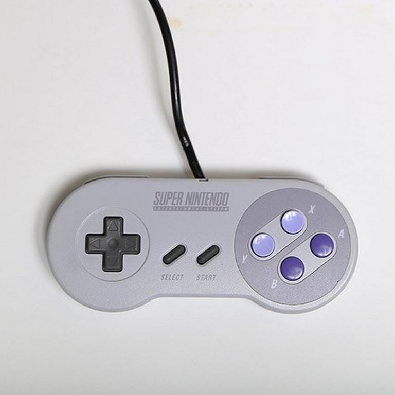
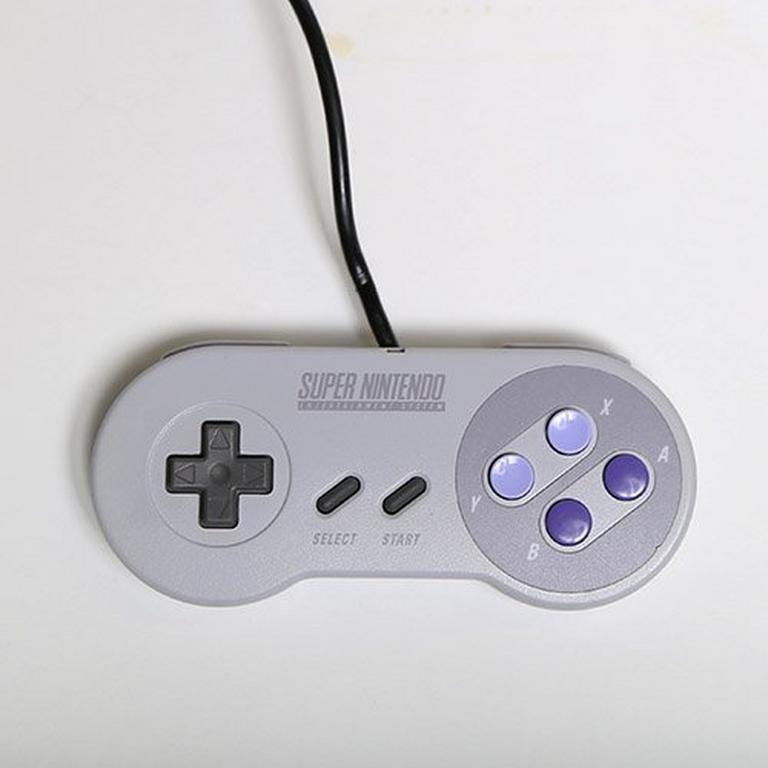
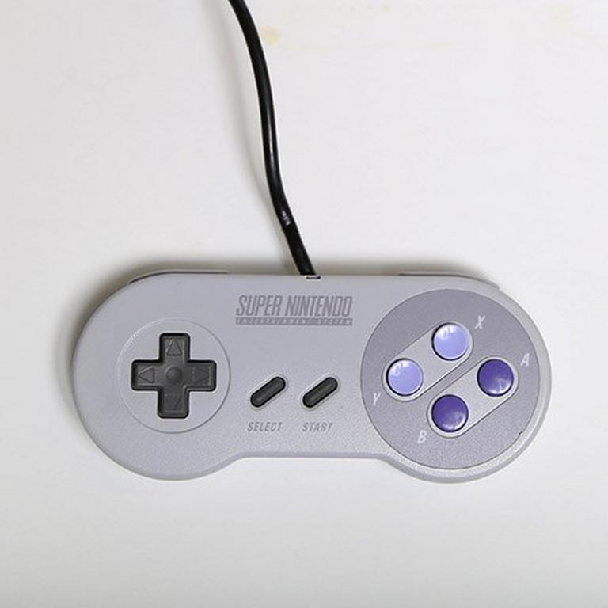

My name is Brian Burchett. My internet screen name is "TheIrishBub", so if you happen across that name online, that's me. I am actually part Irish, with a bit of Scottish and German thrown in for good measure. The "Bub" part of myscreen name comes from my initials, which isn't entirely true. My middle name doesn't really start with the letter "U". I chose the name "TheIrishBub" because it both describes who I am, and it also sounds cool.
As noted on my main page, I'm a 26 year old student of Computer Software Technology at Thaddeus Stevens College of Technology. I like things that involve puzzle-solving, so speedsolving the Rubik's Cube and figuring out Sudoku puzzles are right up my alley.
I am also an avid gamer. JRPGs are my go-to when I am bored and want to play video games. I also like to play platformers, like the Super Mario series, and Metroid-vanias, such as Super Metroid and Castlevania: Symphony of the Night. I also recently got into GoldenEye and Perfect Dark, both being first-person shooter games for the N64 console.